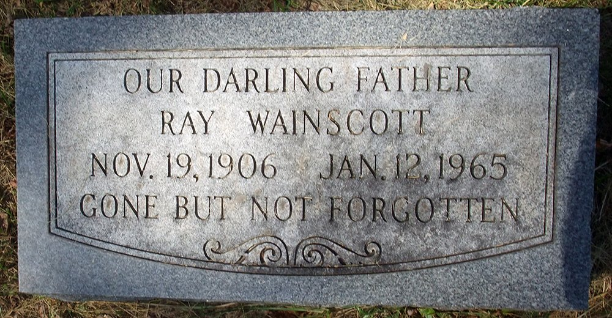
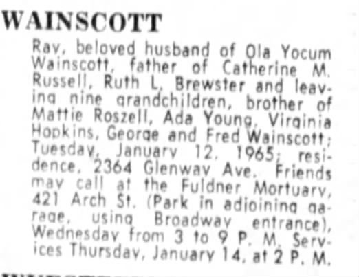

19 November 1906 – 12 January 1965
Ray’s 1927 marriage record names Elizabeth Lawrence as his bride. Their four daughters are supported by the marriage and census records, their own records, and Ray’s 1965 death notice, which names Catherine and Ruth.
Ray’s 1965 death notice identifies Ola Yocum as his wife at death. The date and place of his marriage to Ola have not been located.
John Richard Wainscott is identified as Ray’s father through family records and memorial links. Nellie Tucker is linked as Ray’s mother in a Find a Grave family connection, but her age relative to the older children raises the possibility that she was a stepmother. Ray’s death certificate has not yet been inspected to settle his mother’s identity.
The 1965 death notice names Mattie Roszell, Ada Young, Virginia Hopkins, George Wainscott, and Fred Wainscott as Ray’s siblings. Walter is linked as a sibling on Find a Grave. The family relationships and dates should be checked against original records where available.
No family folder link is listed.
19 November 1906 · Birth · age 0
Born in Owen County, Kentucky, according to his headstone and death index.
15 October 1927 · Marriage to Elizabeth Mae Lawrence · age 20
Married in Campbell County, Kentucky, according to the county marriage record.
23 March 1930 · Daughter Catherine born · age 23
Catherine Mae Wainscott was born in Cincinnati, Ohio.
1930 · Cincinnati household · age 23
The census lists Ray with wife Elizabeth and infant daughter Catherine in Cincinnati.
17 February 1935 · Daughter Margaret born · age 28
Margaret Lane Wainscott was born in Cincinnati.
3 August 1938 · Daughter Margaret’s death · age 31
Margaret died at age three. The family was living at 1211 Harrison Street, Cincinnati.
29 November 1942 · Daughter Wanda’s death · age 36
Wanda died at age nine. The family was living at 956 Martin Street, Cincinnati.
1950 · Cincinnati household and work · age 43
The census lists Ray as a molder in a brass foundry, living with wife Elizabeth and daughter Ruth in Cincinnati.
5 April 1958 · Elizabeth’s death · age 51
His wife Elizabeth died in Cincinnati.
1958–1965 · Marriage to Ola Yocum
His 1965 death notice names Ola Yocum Wainscott as his wife. The marriage date and place have not been located.
12 January 1965 · Death · age 58
Died in Cincinnati, Hamilton County, Ohio, and was buried at Baltimore Pike Cemetery, Section 10, Grave 436.
Ray Henry Wainscott was the son of John Richard Wainscott and, probably, Melvina Nellie Tucker. Ray and his brother Fred’s public FamilySearch profiles name the same parents, and Ray’s Find a Grave memorial links Nellie as a parent. This is a working family-group conclusion (~75%), not a proven biological relationship: the census schedules and Ray’s death certificate have not been inspected. Nellie’s birth year varies between 1886, 1887, and 1890, and Ray’s birth year between 1906 and 1907.
On 15 October 1927 he married Elizabeth Mae Lawrence across the river in Campbell County, Kentucky. They raised their family in Cincinnati, where Ray worked as a molder in a brass foundry. They had four daughters, Catherine, Wanda, Margaret and Ruth, and lost two of them young: Margaret in 1938, aged three, and Wanda in 1942, aged nine.
Elizabeth died in 1958. Ray later married Ola Yocum. He died in Cincinnati on 12 January 1965, aged 58, survived by Ola, his daughters Catherine Russell and Ruth Brewster, nine grandchildren, and his brothers and sisters. He is buried at Baltimore Pike Cemetery beside Elizabeth, under a stone that reads "Our Darling Father ... Gone But Not Forgotten."

No DNA matches linked yet.
Ray’s public FamilySearch profile names John Richard Wainscott and Melvina Nellie Tucker as his parents; his brother Fred’s public profile names the same pair and lists Ray as a sibling. Ray’s Find a Grave family panel also lists John and Nellie Tucker Wainscott Cox as parents. This supports Nellie as the best candidate (~75% working confidence), but the FamilySearch profiles are from a shared compiled tree and no original birth or death certificate has been inspected.
Nellie’s birth year varies among sources: 1886 (FamilySearch), 1887 (public Ancestry profile), 1890 (Ray’s Find a Grave panel). Ray’s own birth date varies as well: 1906 on his headstone/project profile versus 1907 on FamilySearch. Preserve both discrepancies; do not imply the 1890 date is reconciled.
The live FamilySearch profile says Ray lived in Shelby, Kentucky, in 1910 and Gratz, Owen County, in 1920; the original schedules were not inspected in this pass. His Ohio death certificate (no. 03458) remains the direct record most likely to settle his mother.
Some public Wainscott trees show John with several spouses and composite child lists. Do not assign every child to Nellie without a source bridge.
Profile history: Created 11 November 2026 from death certificates, death and marriage indexes, census records, a 1965 death notice and Find a Grave.